Chapter VI. Tracking Game, Licences, And Camp Notes
Description
This section is from the book "Wild Life In Central Africa", by Denis D. Lyell. Also available from Amazon: Wild Life in Central Africa.
Chapter VI. Tracking Game, Licences, And Camp Notes
Knowledge of tracking useful to the hunter—Scarcity of blood spoor caused by use of modern rifles—The easiest time to track—Difficult country to spoor in—The droppings a good guide to age of tracks—Elephants swallowing stones—The usual method of hunting in Central Africa— Distinctive smell of different game—Anthills useful for stalking—Game fond of ashes—Fondness of game for high hills—Sharp grass and other vegetable nuisances—Ticks—Leeches in Africa and India—A deadly tea estate in India—The best spots to hit game and the effects of such wounds—Animals helpless with back leg broken—Tenacity of life in game—The best position for shooting—Game plentiful near perennial rivers in the dry season—The extinction of game a difficult matter in Central Africa—Sleeping sickness and the best preventive for its spread—Licences and game allowance in Nyasaland, North-Eastern Rhodesia, and British East Africa—Poaching by white men—A letter quoted from the Field about German East Africa—Remarks on game protection—Game reserves and their uses—The cruelty of confining wild creatures in cages—The hardest sport in the world—A few notes on camp life—Advice for a man who gets lost in the bush.
In previous volumes, particularly in 11 Central African Game and its Spoor," by Captain C. H. Stigand and myself, I have written a good deal about tracking, and there is no doubt that a good knowledge of this interesting part of big game hunting is necessary for any man who wishes to become an expert hunter.
Anyone who can walk well and hold a rifle fairly steady will be able to shoot a lot of game ; but there are many cases when a knowledge of spooring will help a man to obtain a trophy that would be lost unless the hunter himself, or one of his native followers, be proficient in the art.
A good tracker can read on the ground the recent wanderings of game. Much lore on their habits can be ascertained in this way, and such study increases the pleasure of shooting a hundredfold.
Naturally the easiest animals to track are the heaviest in body, though if the ground should be stony or baked very hard with the heat of the sun, even they may leave very slight impressions behind them. But besides the footprints, there are the droppings to go by, and they are generally a greater index to the age of the spoor than the tracks themselves.
Again, all animals feed as they move about unmolested, and the nibbled grass or the branches and leaves torn from trees and bushes by elephant, rhino, and eland are also a silent guide to the observing sportsman.
Before going further, I may mention that the word "spoor" is a South African term for the tracks of game, and it may also mean the droppings or other traces of game as well as the footprints.
The time when a knowledge of spooring becomes most useful is when some animal is wounded and escapes for the time being.
In such an event there is the blood trail, as well as the tracks and droppings, as a guide to the path the animal has taken. Sometimes, if a beast is very hard hit, it will leave the herd and go off by itself, and in this case it is, of course, much easier to follow.
The high-velocity rifles used at the present time do not cause an animal to drop so much blood as was formerly the case with Express rifles shooting soft lead bullets, or big bore rifles or smooth bores.
It is not usual for a modern expanding bullet to pass through a large animal, and the small entrance hole soon gets blocked up with coagulated blood, and there may be very little blood spilt. If a bullet goes right through there is a better chance of the beast bleeding considerably, so a bullet like the " Dum-Dum " (with lead just exposed at the point) is a good type of projectile to use on animals like buffalo, eland, roan, kudu, hartebeest, and sable antelope.
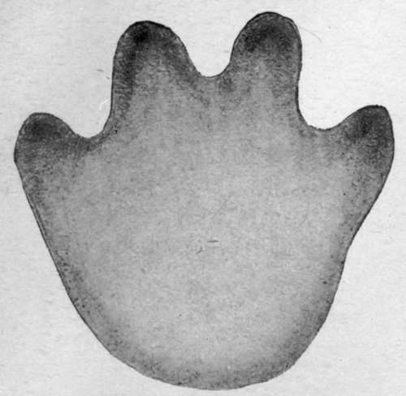Hippo. (One-sixth size.)
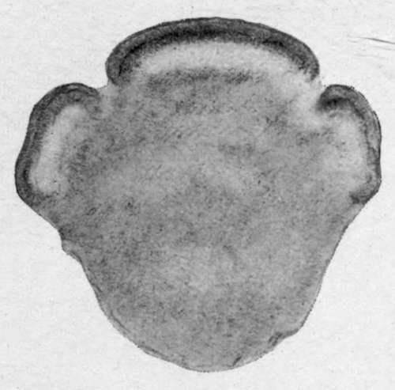Rhino. (One-sixth size.)
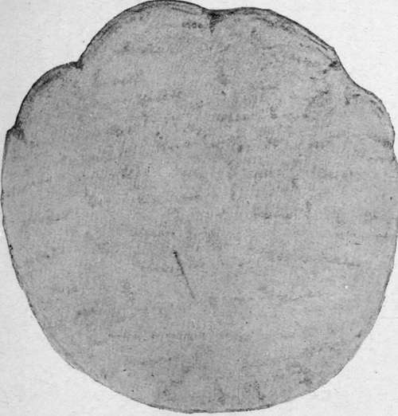Elephant. (One-sixth size.)
(3) Spoors Of The Pachyderms
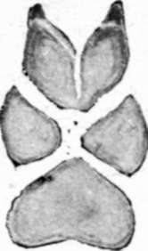Jackal. (One-third size.)
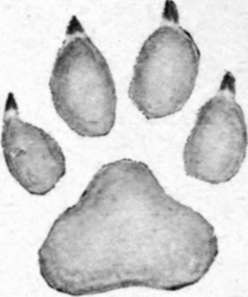Civet Cat. (One-third size.)
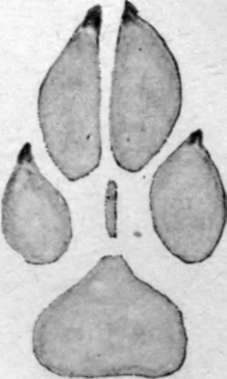Hunting Dog. (One-third size.)
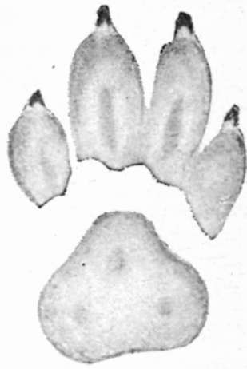Hyaena. (One-fourth size.)
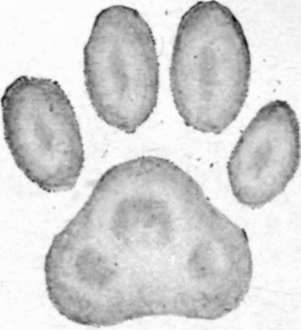Leopard. (One-fourth size.)
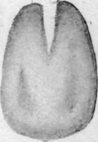Warthog. (One-third size.)
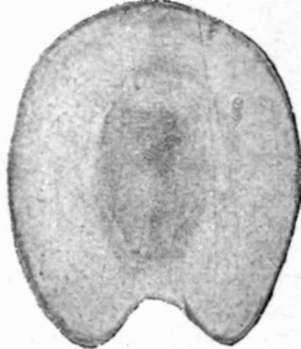Zebra. (One-fourth size.)
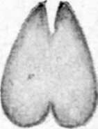Kasenye. (One-half size.)
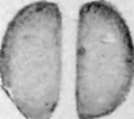Kilpspringer. (One-half size.)
(4) spoors of the carnivora, etc., in miniature. (Note.—Lion Spcor similar to Leopard, but larger.)
In a medium-sized buck, such as a bushbuck, impala, or reedbuck, a slit or a soft-nosed bullet will usually go right through, and then there will be plenty of blood to follow.
With elephant, rhino, and hippo, solid sheathed bullets should invariably be used, and a rifle like the 7.9mm. Mauser will sometimes drive a solid right through these animals when a body shot is taken. I have known such a bullet go right through an elephant's head, but this is unusual.
Continue to:
- prev: The Risks Of Big-Game Shooting. Part 8
- Table of Contents
- next: Tracking Game, Licences, And Camp Notes. Part 2